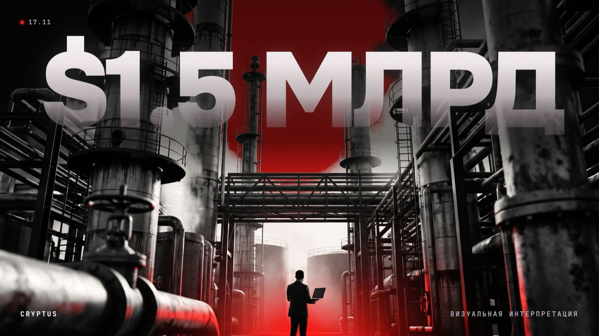
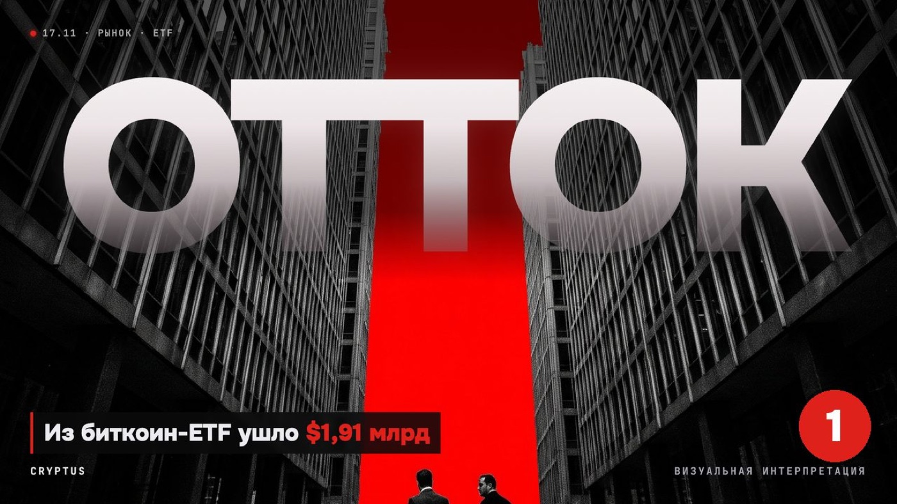
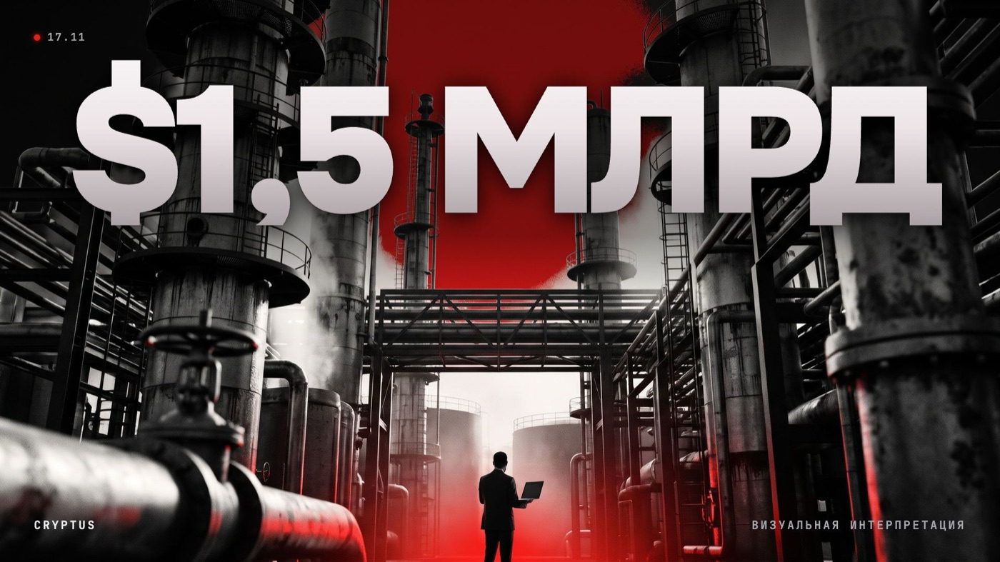
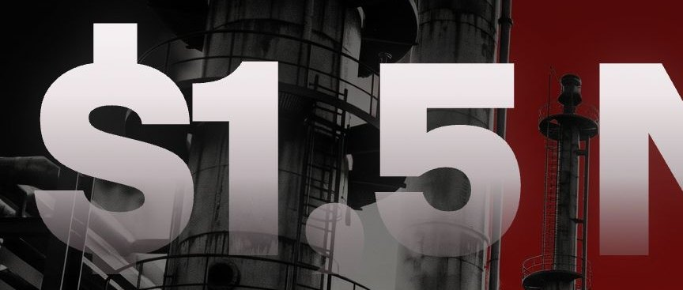
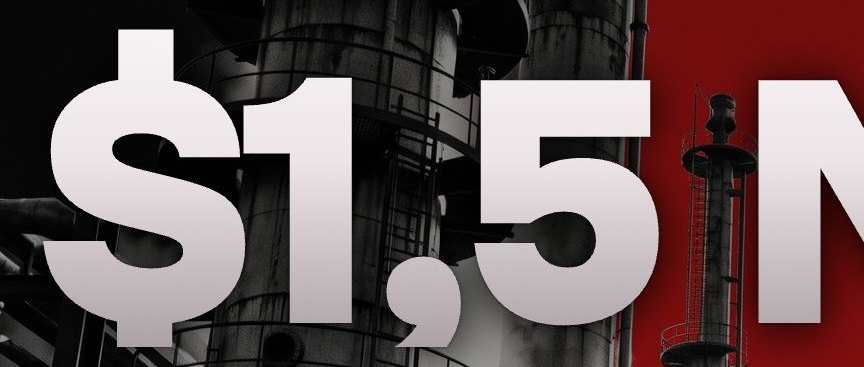
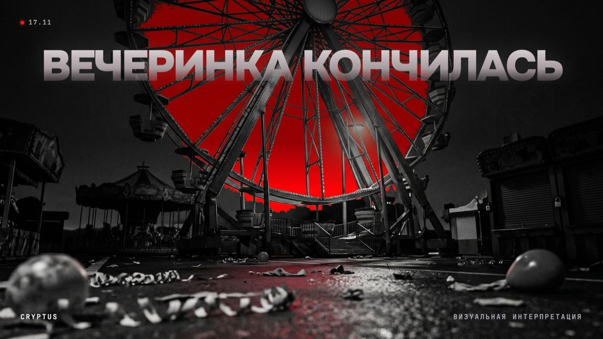
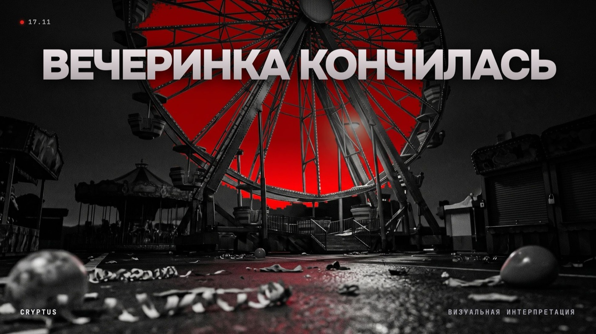
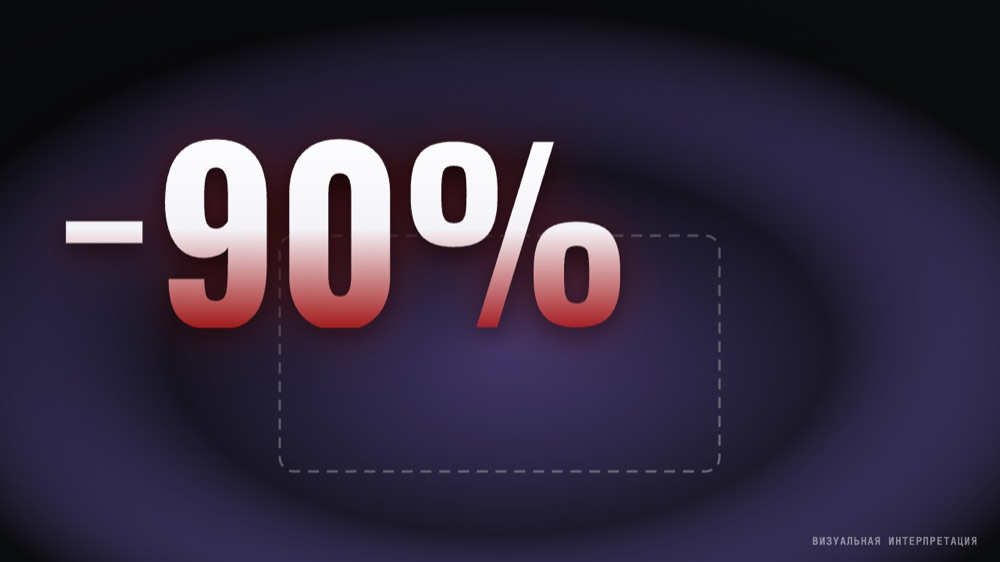
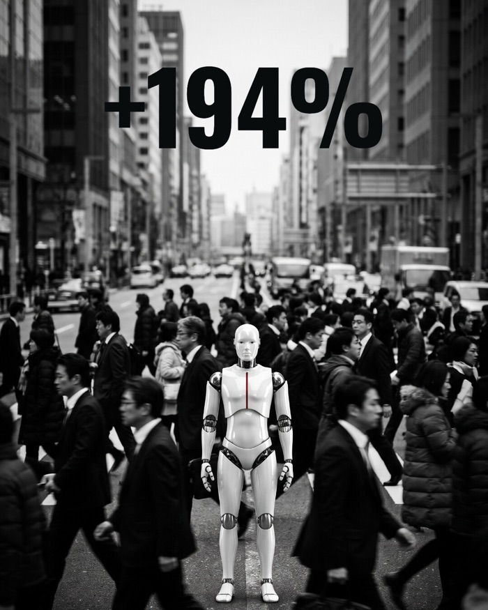

17 ноября Андрей выбрал в боте стиль «Реализм-сцена» и нажал «🎨 Рисуй» под двумя заданиями. Обе картинки нарисовал Nano Banana Pro в Gemini, на запасную модель бот не уходил, так что дело не в модели. Испортили всё задание на кадр, вёрстка надписи и проверки после неё. Ниже — его кадры, что именно сломалось, как это чиним и как должно выглядеть по эталону. Шесть причин: часть исправлена у нас в оформлении, остальное — у строителя бота.









Андрей: «Выбираю из вариантов ТЗ или мне самому их править?»
Ответ: всё правильно — выбираешь задание и жмёшь «🎨 Рисуй», править не обязательно. Кривые надписи — наша ошибка, не его. Чтобы вопрос не возникал, над заданиями будет одна строка: «Выбери одно задание и жми 🎨 Рисуй — бот нарисует сам. ✏️ Поправить — только если хочешь другую идею: напиши словами, что поменять».
| № | Что сломалось и почему | Что правим | Где |
|---|---|---|---|
| 1 | Сцена не по формуле стиля Формула «Красного выреза неба» — две стены по краям и большая ровная красная заливка неба, на ней лежит надпись. ТЗ бота заполнило кадр колоннами и трубами, красное осталось маленьким пятном. Формулу стиля ТЗ просто не получало, правила «верх кадра под надпись — спокойный» тоже не было. | ТЗ получает формулу стиля и правило: верхние ~45% кадра спокойные (небо, заливка, туман), красное — не меньше трети кадра. | исправлено у нас |
| 2 | Буквы с прозрачным низом на пёстрой сцене У стилей, где надпись стоит спереди, низ букв оставался погашенным, как в приёме «предмет перед надписью». Там этот низ закрывает вырезанный предмет. Здесь предмета нет, и сквозь нижнюю треть букв просвечивали трубы и спицы — надпись выглядела «за сценой», каша. | Спереди буквы теперь целиком: непрозрачные, низ светло-серый, тёмная тень отделяет их от фона. | исправлено у нас |
| 3 | Проверка букв пропустила неверную сумму Запятая в «$1,5» утонула в погашенном низу. Распознавание прочитало «$15 МЛРД», а проверка сочла это похожим и пропустила. На картинке сумма в 10 раз больше, чем в посте. | Числа сверяются точно: «1,5» должно прочитаться как «1,5». Не совпало — надпись не ставится. Второй проход в боте — та же проверка. | у нас исправлено, у строителя — правка |
| 4 | Критик не проверял место под надпись Критик смотрит кадр до надписи и не знал, что она встанет спереди сверху. Кадр без чистого места получил 8 из 10, а 7 из 10 проходит без повтора. | Критику сказано: конструкции поперёк верхней полосы — брак. В коде: оценка места ≤ 4 — брак при любом общем балле; плюс последний взгляд на готовую картинку с надписью. | промпт — у нас, код — у строителя |
| 5 | Набросок похож на сломанную картинку В карточке ТЗ набросок — фиолетовое пятно с пунктирной рамкой «здесь будет герой» и другим шрифтом, чем в финале. Человек видит пустую рамку и думает, что картинка не загрузилась. | Вместо наброска — образец стиля из галереи с подписью «пример стиля, твой кадр нарисует модель» или карточка без картинки. | у строителя |
| 6 | Непонятно, что делать с заданиями Андрей спросил: «выбираю из вариантов ТЗ или мне самому их править?» Длинный абзац под заданиями этого не объясняет. | Одна строка над заданиями: «Выбери одно задание и жми 🎨 Рисуй — бот нарисует сам. ✏️ Поправить — только если хочешь другую идею». | у строителя |
Все 5 кадров нарисовал Nano Banana Pro в Gemini, бесплатно, через очередь бота; на запасную модель бот не уходил. Первый заход: 2 варианта, критик 7 и 7 — взят второй. Второй заход: 3 варианта, критик 6, 8, 6 — взят средний, тот самый кадр без места под надпись. Проверка букв оба раза сказала «читается».
Правки в оформлении уже сделаны и проверены на кадрах Андрея: старый и новый код на одних и тех же картинках, новых генераций не было. Остальные стили (предмет перед надписью, герой за словом) рисуются точно так же, как раньше — проверено побайтно. Ещё не проверено: живой прогон в боте после выкатки строителем и вид в самом Telegram.